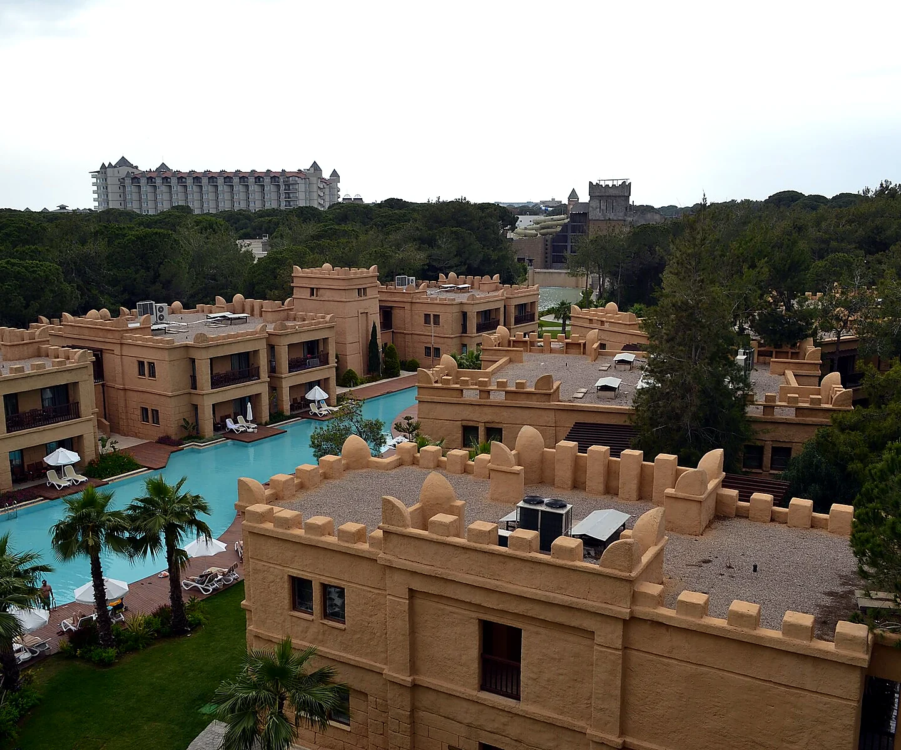

Курорт
Белек
Белек находится примерно в 35–40 километрах от аэропорта Анталии и почти полностью состоит из крупных гостиничных комплексов с большими территориями. Здесь нет плотной городской застройки и шумного центра, зато много отелей первой линии с собственными песчаными пляжами.
Главное преимущество Белека — сильная пятизвёздочная база, Ultra All Inclusive, SPA, аквапарки, детские клубы и спортивная инфраструктура. По сравнению с Кемером здесь меньше горных пейзажей, а по сравнению с Анталией — меньше городской жизни; зато Белек хорошо подходит тем, кто хочет спокойный отельный отдых с высоким уровнем сервиса.